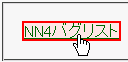

アンカーに対してボーダーを設定すると、マウスクリックに反応しないなどアンカーとしての機能を失う。
赤色実線のボーダーを設定しています。リンクが機能するか試してください。
N7.1での表示
NN4.8での表示
a:link擬似クラスで border: 0; を上書きすることでこのバグを回避できます。
<style type="text/css">
a.sample {
border: 2px solid red;
}
a.sample:link {
border: 0;
}
</style>
<p><a href="../nn4x.html" class="sample">NN4バグリスト</a></p>
しかし、 border: none; を上書きしてもこのバグは回避できません。
NN4.8で不具合の発生を確認しました。